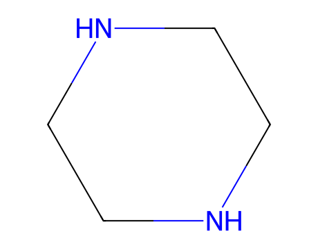
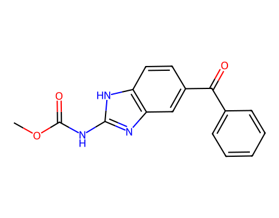
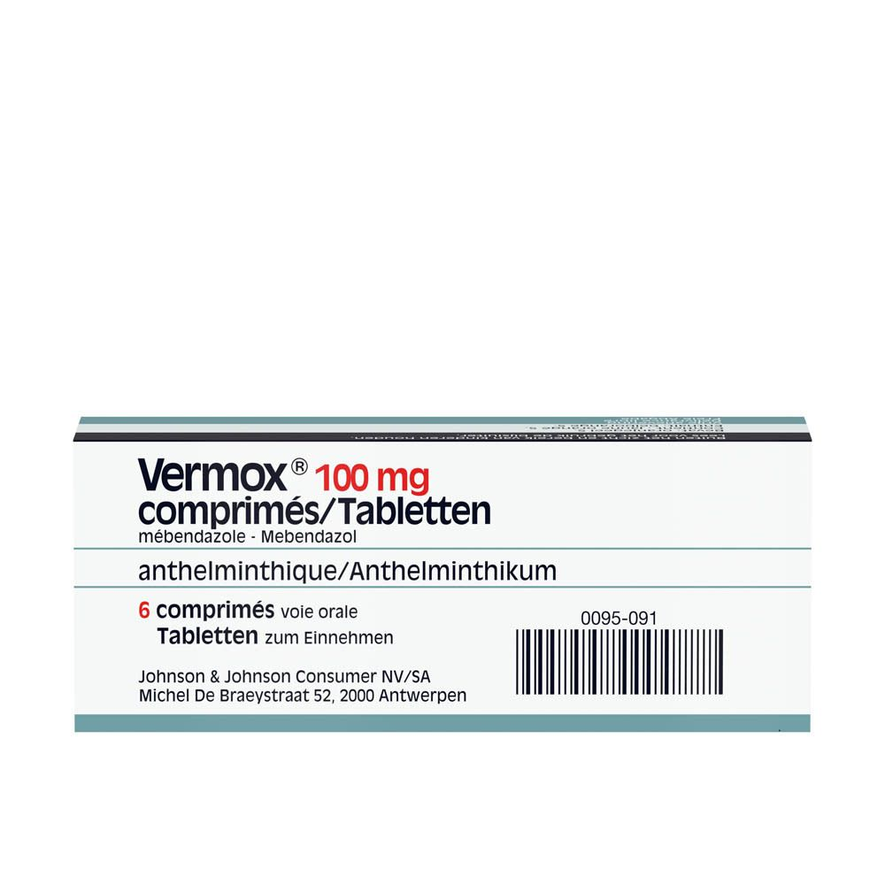
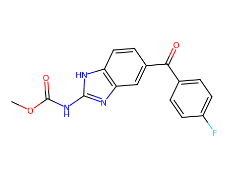
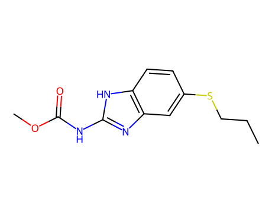

6 molécules1 à dessiner7 concepts2 questions du prof
Les médicaments doivent agir dans la lumière intestinale : peu résorbés, comme les antiseptiques urinaires agissent dans l'urine. Deux mécanismes : agonistes GABA (paralysie) et inhibition de la tubuline.
gras souligné = comprendrebleu = DCI + nom commercial + classebleu gras souligné = dessinerrouge = très important
6 molécules (1 à dessiner) · afficher :
Antimalariques, anthelminthiques, antiseptiques intestinaux, désinfectants et antiseptiques de contact7 concepts · 6 molécules (1 à dessiner) · p. 148-175
Concepts à comprendre (7)
Nématodes, cestodes et ectoparasites
Sous nos latitudes, les helminthes les plus répandus sont les nématodes (vers ronds : ascaris, oxyures, ankylostomes, nécators, trichocéphales) et les cestodes (vers plats segmentés : taenia). Ils infestent le plus souvent le tube digestif. Les ectoparasites (p. ex. Sarcoptes scabiei, gale) ne sont pas des vers mais sont sensibles à certains anthelminthiques.
Pourquoi la plupart des anthelminthiques agissent-ils localement ?
Parce qu'ils sont en général mal résorbés et que les vers se trouvent dans le tube digestif (exception : l'ivermectine, absorbée).
Différence clé : sélectivité de la pipérazine
La pipérazine agit comme agoniste GABA sur les neurones moteurs des vers. Chez l'homme, le GABA est principalement dans le SNC et la pipérazine traverse très peu la barrière hémato-encéphalique aux doses thérapeutiques : peu d'effets neurologiques, sauf surdosage ou insuffisance rénale.
Pourquoi l'insuffisance rénale augmente-t-elle le risque neurologique de la pipérazine ?
Parce que la pipérazine s'accumule, et à forte concentration elle peut atteindre le SNC où se trouvent les récepteurs GABA humains.
Benzimidazolés et tubuline
Les anthelminthiques benzimidazolés inhibent chez certains parasites du tube digestif la polymérisation de la tubuline en microtubules : c'est le deuxième exemple, après la griséofulvine, de médicaments agissant sur le cytosquelette. Le parasite libère moins de médiateurs neuromusculaires et absorbe moins de glucose, il est immobilisé puis éliminé passivement dans les selles.
Pourquoi le ver est-il éliminé « passivement » ?
Parce qu'immobilisé (et privé de glucose), il ne peut plus se maintenir dans l'intestin et part avec les selles.
Oxyurose : re-traitement et entourage
En cas d'oxyurose (Enterobius vermicularis), aucun médicament ne détruit les œufs, localisés hors du corps (p. ex. sous les ongles) : il faut redonner 100 mg de mébendazole après deux semaines et traiter l'entourage immédiat.
Pourquoi une deuxième prise à 2 semaines ?
Pour tuer les vers issus des œufs qui ont échappé au premier traitement (les œufs ne sont détruits par aucun médicament).
Gale sarcoptique humaine
Affection très contagieuse bénigne de la peau due à Sarcoptes scabiei hominis : la femelle creuse un tunnel dans la peau et y pond ses œufs, ce qui déclenche des démangeaisons intenses. L'ivermectine est utilisée lorsque le diagnostic est posé en clinique et/ou par examen parasitologique.
Pourquoi un anthelminthique traite-t-il la gale, qui n'est pas un ver ?
Parce que l'ivermectine agit sur les canaux chlorure (GABA/glutamate) présents aussi chez ces ectoparasites (acariens).
Ivermectine : entrée de chlorure sous l'effet du GABA
L'ivermectine provoque une paralysie en hypertonie et la mort du parasite, par effet sur l'entrée d'ions chlorure sous l'effet du GABA libéré en excès par les terminaisons présynaptiques des parasites, ou par stimulation directe de leurs récepteurs de type GABA.
En quoi la paralysie due à l'ivermectine diffère-t-elle de celle de la pipérazine ?
Filariose cutanée due au nématode Onchocerca volvulus, transmise par une mouche près des rivières ; 37 millions de personnes, surtout en Afrique. L'atteinte oculaire fait sa gravité : première cause de cécité dans les zones infestées. Traitée par l'ivermectine.
Pourquoi l'appelle-t-on « cécité des rivières » ?
Parce que la mouche vectrice vit près des rivières et que l'infection oculaire peut rendre aveugle.
Dérivés pipéraziniques 1 molécule · 1 à dessiner

Pipérazineà dessiner
pas de nom commercial au cours
Dérivés pipéraziniques — Agoniste GABA des vers
Noyau : Cycle saturé à 6 chaînons avec 2 NH en 1,4
Mécanisme : Agoniste des récepteurs GABA des neurones moteurs des vers → hyperpolarisation des membranes musculaires → paralysie flasque ; le ver se détache de la paroi intestinale et est expulsé par le transit (p.159).
Indications : Ascaridiose et oxyurose (encore employée dans certaines régions du monde) (p.159)
Structure-activité
Hétérocycle hexagonal diazoté (1,4). Utilisée sous forme d'hydrate ou de sel d'acide citrique ou adipique (HOOC-(CH2)4-COOH) : solubles dans l'eau et l'alcool, insolubles dans les solvants organiques (p.159).
PIPÉRAZINE : paralysie flasque (le ver lâche prise).
Benzimidazolés 3 molécules


VERMOX®
Mébendazoleà reconnaître
VERMOX®
Benzimidazolés — Carbamate de benzimidazole (5-benzoyl)
Noyau : Benzimidazole – 2-NH–COOCH3 (carbamate de méthyle) – 5-benzoyle
Mécanisme : Inhibe chez certains parasites du tube digestif la polymérisation de la tubuline en microtubules (2e exemple après la griséofulvine de médicament agissant sur le cytosquelette) → réduit la libération de médiateurs neuromusculaires et l'absorption de glucose → immobilisation et élimination passive dans les selles (p.159).
Indications : Nématodes intestinaux, dont l'oxyurose (Enterobius vermicularis) (p.159)
Structure-activité
Seul benzimidazole commercialisé à usage humain en Belgique ; flubendazole = même molécule avec un F en para du benzoyle ; albendazole = S-propyle à la place du benzoyle (p.159-160).
VERMOX® : 1 dose, puis re-dose à J14, toute la famille !

Flubendazoleà reconnaître
pas de nom commercial au cours
Benzimidazolés — Usage vétérinaire
Noyau : Mébendazole fluoré en para du benzoyle
Mécanisme : Inhibition de la polymérisation de la tubuline (benzimidazolés) (p.159).
Structure-activité
= mébendazole + F (p.160).
FLUbendazole = FLUor.

Albendazoleà reconnaître
pas de nom commercial au cours
Benzimidazolés — Usage vétérinaire
Noyau : Carbamate de benzimidazole – 5-propylthio
Mécanisme : Inhibition de la polymérisation de la tubuline (benzimidazolés) (p.159).
Structure-activité
S-propyle à la place du benzoyle du mébendazole (p.160).
Mécanisme : Paralysie en hypertonie et mort du parasite : effet sur l'entrée d'ions chlorure sous l'effet du GABA libéré en excès par les terminaisons présynaptiques des parasites, ou stimulation directe de leurs récepteurs de type GABA (p.161) ; canaux chlorure (glutamate/GABA) → hyperpolarisation (figure p.158).
Indications : Onchocercose (Onchocerca volvulus) (p.161), Infections intestinales à nématodes et filarioses à Wuchereria bancrofti (p.161), Gale sarcoptique humaine, lorsque le diagnostic est posé cliniquement et/ou par examen parasitologique (p.161), Produit « repositionné » testé dans le COVID-19 mais non recommandé à ce jour dans cette indication (résultats contradictoires) (p.189)
Structure-activité
Mélange de deux constituants à structure de macrocycle lactonique (ivermectines B1a et B1b), obtenu par hémisynthèse à partir d'un mélange d'avermectines produit par fermentation de Streptomyces avermectinius (S. avermitilis) (p.161).
IVERmectine : vers + gale, paralysie en hyperTONIE (≠ pipérazine flasque).
Ce que le prof a dit en cours
Vers ronds (nématodes : ascaris, oxyures, fréquents en crèche) vs vers plats (cestodes : ténia). Le traitement n'est pas le même.
Pipérazine : cycle saturé à 6 atomes avec 2 azotes (≠ pyrazine, pyrimidine insaturées) ; agoniste GABA -> entrée de Cl- -> hyperpolarisation -> paralysie du ver ; peu de passage de la barrière hémato-encéphalique.
Mébendazole (VERMOX®) : noyau benzimidazole, inhibe la polymérisation de la tubuline (comme la griséofulvine) ; peu résorbé ; gouttes ou comprimés chez l'enfant.
Niclosamide (YOMESAN®) : vers plats uniquement (ténia).
Ivermectine (SOOLANTRA®) : onchocercose (cécité des rivières) et gale sarcoptique ; effet GABA / canaux chlorure.
Cinq types de produits sur le cytosquelette : griséofulvine, mébendazole, colchicine, alcaloïdes de la pervenche, taxanes.
Les questions posées par le prof
Relevées dans tes enregistrements du cours (et ta base Notion « Questions d'Examen »). Le prof : « vous pourrez avoir toutes mes questions d'examen, je vais vous les donner au fur et à mesure ». Les questions marquées « reformulée » reprennent un point que le prof a expliqué en détail ce jour-là, transformé en question. Réponds d'abord sur papier, puis ouvre la réponse pour te corriger.
13/11/2025Quel anthelminthique agit par ses propriétés antimitotiques (tubuline) tout en étant peu résorbé ? (mébendazole) Voir la réponse
Le mébendazole (VERMOX®) : benzimidazole qui inhibe la polymérisation de la tubuline du ver, peu résorbé donc actif dans l'intestin.
18/09/2025Question courte : quels sont les alcaloïdes actifs sur les microtubules ? (lien griséofulvine/mébendazole/colchicine) Voir la réponse
Alcaloïdes de la pervenche (vinblastine, vincristine, vinorelbine), taxanes de l'if (paclitaxel, docétaxel) et colchicine ; même cible que la griséofulvine et le mébendazole.
Fiche de révision au format de l'examen
Examen écrit, 1 h 30 — 10 pages dont 1 de brouillon. Entraîne-toi dans les conditions : réponds sur papier, puis ouvre le corrigé.
Partie 1 — Questions ouvertes (environ 2 pages chacune)
Question 1. Parlez-moi des anthelminthiques.
Le plan attendu (sous-questions)
Les helminthes
Pipérazine
Benzimidazolés
Niclosamide
Ivermectine
Corrigé détaillé
Les helminthes
Nématodes (vers ronds : ascaris, oxyures) et cestodes (vers plats : ténia) ; transmission oro-fécale. Les médicaments doivent rester dans l'intestin (peu résorbés).
Pipérazine
Agoniste des récepteurs GABA des neurones moteurs du ver -> entrée de chlorure, hyperpolarisation, paralysie flasque ; sélective car le GABA humain est surtout central.
Benzimidazolés
Mébendazole (VERMOX®), flubendazole, albendazole : liaison à la β-tubuline du ver -> pas de microtubules (transport, absorption du glucose) ; vers ronds surtout.
Niclosamide
YOMESAN® : vers plats (ténia), découple la phosphorylation oxydative du ver.
Ivermectine
Lactone macrocyclique d'origine naturelle (avermectines) ; ouverture des canaux chlorure -> paralysie ; onchocercose et gale (per os).
Partie 2 — QROC (réflexion, réponse courte)
QROC 1. Pourquoi la pipérazine paralyse-t-elle le ver sans effet central chez l'homme ?
Réponse
Agoniste GABA : chez le ver, le GABA agit sur les neurones moteurs périphériques (entrée de Cl- -> hyperpolarisation -> paralysie). Chez l'homme, les récepteurs GABA sont surtout centraux et la pipérazine passe peu la barrière hémato-encéphalique ; elle est en outre peu résorbée.
Partie 3 — Tableau de molécules
Comme à l'examen : chaque ligne te donne un indice (structure, DCI ou nom commercial). Complète le reste sur papier ou dans les cases, puis corrige. Structure à dessiner seulement si la molécule est en bleu gras souligné.